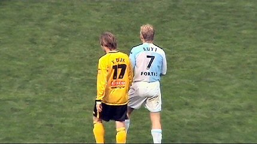
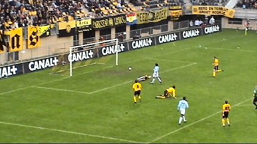

|
Roda JC - Feyenoord (0-2) 17 oktober 2004 |
Roda JC
- Feyenoord (0-2) 17 oktober 2004
Ondanks het vroege aanvangstijdstip een uitverkocht gastenvak.
13.000 toeschouwers valt nog mee voor een veel te vroege
zondagmiddag.
Ook jij kunt Rodameëdsje worden.
De sfeeractie op west bestond uit kleurrijke banners...
...vlaggen en papiersnippers.
Het ENECO-shirt zweefde deze keer over de goedgevulde oosttribune.
Sfeeractie in Z16!
Feyenoord in een
soort Lazio Roma shirts.
Ruud Gullit in baby-blauwe outfit.

Gregoor versus Dickie.
De oprechte voetballiefhebber kon smullen van Kone's onnavolgbare
voetenwerk.
Jammer dat de
baltovenaar voortdurend vastgeklemd werd door
met name Paauwe die daar
onbestraft voor bleef.
Zoals hier bijvoorbeeld.
Er komen steeds meer Engelsen naar Roda kijken.
Ondanks een aantal behoorlijk goede kansen aan beide zijden
bleef
het 0-0 tot aan de rust.
Naast de gebruikelijke stewards, deze keer ook blauw in de
omloop.
Misser voor open doel.
Deze gaat er wel in. Kuijt neemt aan en schiet koel
binnen: 0-1 (59').

De voortreffelijk keepende Kujovic is kansloos op dit schot.

Misser voor open doel....
Babos voorkomt een doelpunt van Cristiano.
Schot van Van Dessel belandt op de paal.
Roda kreeg kansen genoeg maar de bal wilde er niet in
vanmiddag.
Te koop: Burberry-pet.
Terwijl iedereen aan buitenspel denkt gaat Kalou er vandoor om
in de
93e min. 0-2 te scoren.
Zelfs de Feyenoorders kunnen deze "lucky" nauwelijks
bevatten...
Roda heeft goed gespeeld vanmiddag maar het zat een beetje
tegen. Een
gelijkspel zou verdiend
zijn geweest.
Er volgt nog een ballen-actie. Kujovic mag zijn werptechniek
naar de
zuidtribune demonstreren.
Deze happy family beseft kennelijk niet dat de wedstrijd
verloren is ;-)
Jos T. ziet het niet meer zitten. Was toch op zuid gebleven
kerel!
In de Kick-Off verschijnen Kujovic....
... en Sonko (rechts).
Deze Kujovic is nep, Susanne niet.
Navigator Lucien voert ons naar het Alternatiefje in Schaesberg.
Achterin, Nico P.
Uiterst rechts John, nieuwe sponsor van deze site (?)
Foto's door Feyenoord Foto Fansite
>>> (on-line)
© Koempels Pleasure Dome